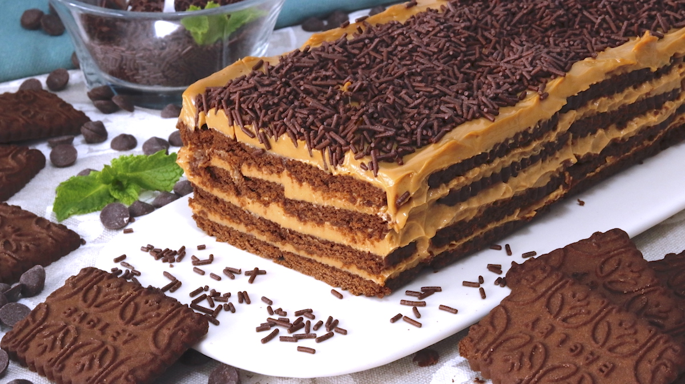

Chocotorta

Description
With Argentinian origin the Chocotorta is a delicious and easy cake to make.
It takes very few ingredients these being, chocolate cookies, and a cream made combining milk jam or "dulce de leche" with cream cheese.
Ingredients
- 400 grms Dulce de Leche / Milk Jam
- 400 grms Cream Cheese
- 100 ml Coffee
- 100 ml Water
- Chocolate cookies (two packages)
- Optional: Chocolate sprinkles
Steps
- First you must prepare the filling cream
- Mix the Dulce de Leche with the cheese cream until smooth
- Put the Coffee and water in a dish. This could be replaces with Chocolate Milk if you do not like Coffee.
- Inside a high tray place a first layer of cookies after dipping them in the Coffee + Water mix.
- On top place a generous layer of the cream. Make sure to cover all of the cookies.
- Repeat the steps, place another layer of cookies and on top another layer of cream.
- Repeat until there are no more cookies and you cover everything with the cream.
- Store in the fridge